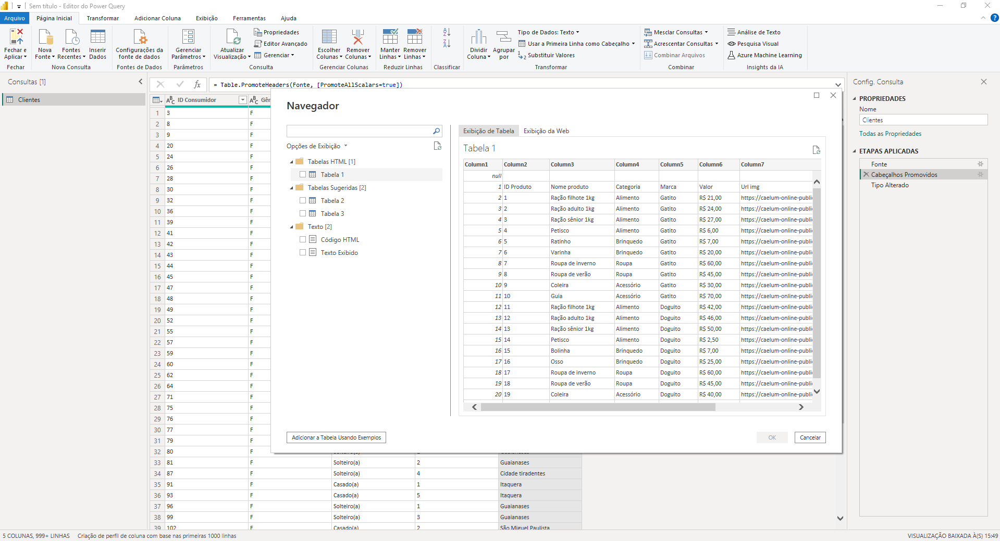
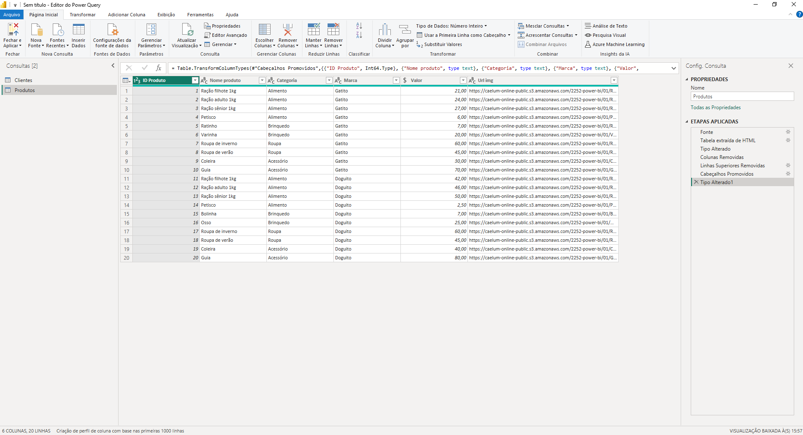
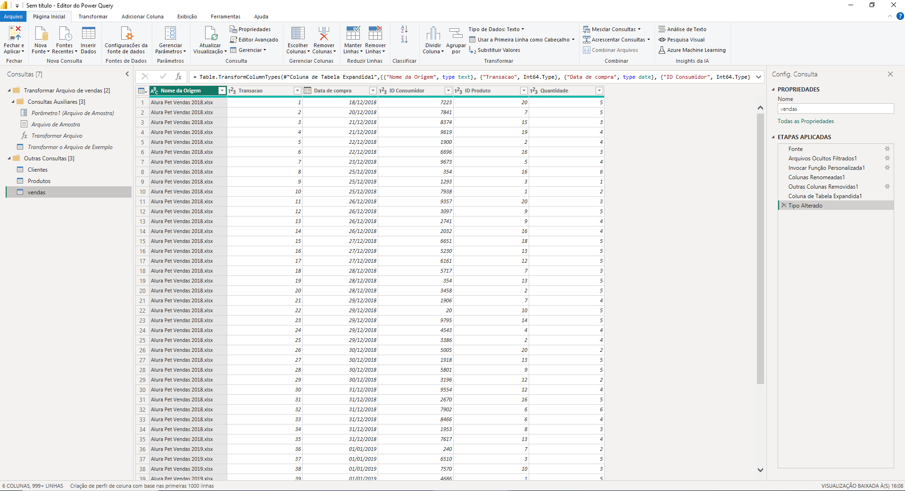
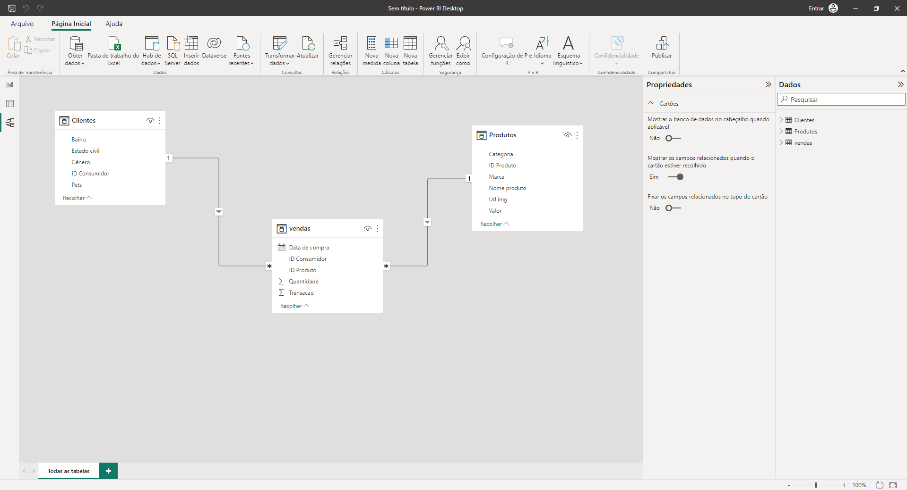
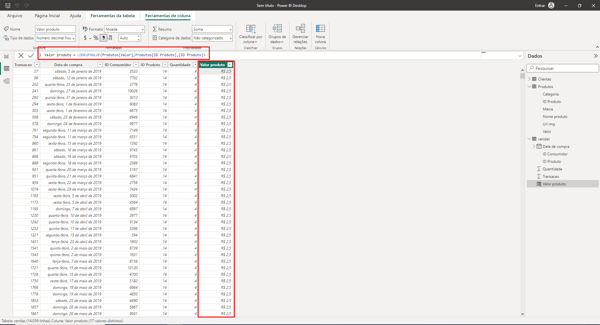
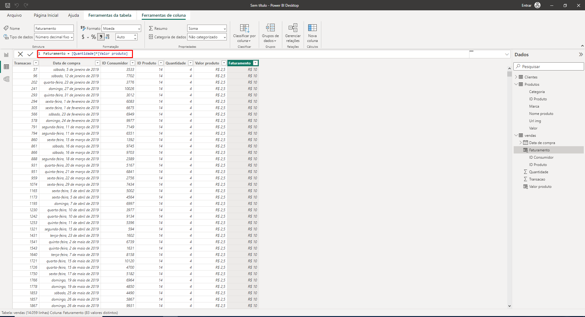
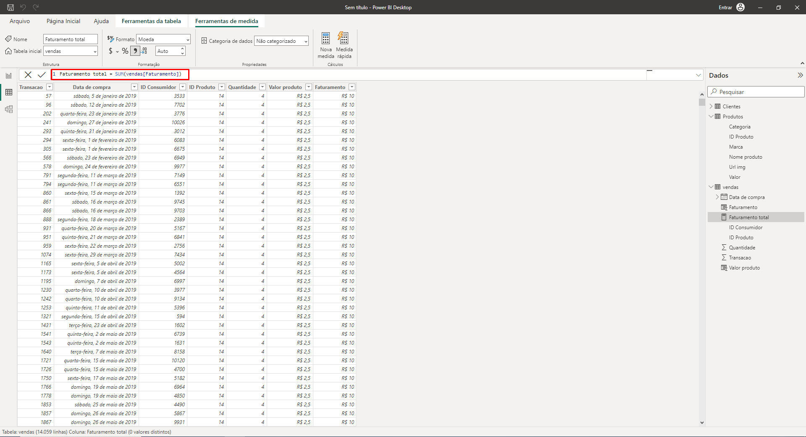
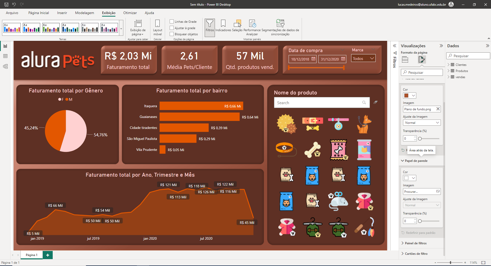

Projeto de Power Bi como parte de conclusão do curso Power BI Desktop: construindo meu primeiro dashboard da Alura.
Processo
Inicialmente, foram extraídos os arquivos necessários em Excel para o PowerBI desktop utilizando a formatação mais adequada.
Em seguida, a tabela foi alterada para remoção de erros e células em branco.
Foi feita a junção de todos as planilhas e um único arquivo.
Foi realizada a conexão entre os identificadores de cada planilha.
Com a conexão realizada, foi calculado automaticamente o valor de cada produto, o faturamento de cada produto e o faturamento total.
  Por fim foi feita a customização para a apresentação dos valores adequadamente.
